Overview
When using Device Tracker, the end user is initially presented with the Checkout screen if the Checkout feature is enabled. Once an administrator or manager logs in after checkout, they gain access to monitor devices across their organization (administrator) or site (manager) to identify devices at-risk.
To initiate the process to find a device, the misplaced device must be marked for retrieval by the administrator or manager. To find a device, the “finding” device (the device performing the search) is used to determine the distance the user is located in relation to the “misplaced” device (the device to be found) using the visual proximity meter. Once a device is found, recommission the device to place it back into the active device pool. Alternatively, decommission the device if it needs to be removed from the active device pool.
A note can be added at any time to capture comments specific to the device (e.g. device screen damaged) to aid in tracking or identifying problems with the device. This feature is available only for administrators and managers.
For operation, device licenses are required.
The Requirements must be met to find a device.
Device Checkout
Device Checkout is an optional feature that can be enabled by the administrator. If enabled, the user is required to scan their barcode at the start of their work shift to checkout the device, then logout at the end of their work shift to checkin the device. The checkout screen is in kiosk mode, preventing the user from accessing the device until checkout is performed. When a device is checked-out, the user is associated with the particular device until the user checks in the device.
Note: For Android Q and higher, if "Display over other apps" permission is not granted, the user must manually launch the app once and grant this permission for checkout functionality to work properly.
Checkout
Perform a device checkout at the start of a work shift as follows:
Remove the device from power to automatically display the checkout screen or launch the app on the device.
The checkout screen appears, prompting to scan a barcode. When in the checkout screen, the user is prevented access to the device until checkout is performed.
 Device checkout
Device checkoutScan the barcode associated with the user by pressing the scan trigger or tapping on the barcode image on the screen. If the administrator has set a prefix string in the barcode prefix option, the barcode must contain the prefix specified for checkout to be successful.
A message appears indicating the user is checked-out successfully. The app is placed in the background.
The user is now associated with the device.
Note: If Checkout is enabled, after a device is rebooted the Checkout screen may take up to one minute to be displayed.
Check-In
Choose one of the following options to Check-In a device:
Option 1:
- Launch the app.
- Tap on the options menu from the top right and select Check-In Device.
- The user is checked-in. The checkout screen appears prompting to scan a barcode.
Option 2:
- Connect the device to power.
- The user is checked-in. The checkout screen appears prompting to scan a barcode.
Option 3:
- Reboot the device.
- The checkout screen appears prompting to scan a barcode.
Web Portal Dashboard
The web portal provides a dashboard accessible by administrators and managers. The dashboard displays device counts, device infromation and access point (AP) information. It also allows action to be taken on devices to aid in device tracking.
Administrators are granted access to device and AP information across all sites in the organization. Managers are granted access to device and AP information specific to their assigned site.
Administrator Web Portal
The administrator dashboard displays device and access point (AP) information across all sites in an organization and allows action to be taken on devices to aid in device tracking. After logging in to the web portal as an administrator, click Dashboard in the left menu. The following views are displayed: Devices Summary, Mobile Devices, Access Point, and Sites.
Devices Summary
Devices Summary displays the device count across all sites of an organization based on device state or status. Access Devices Summary by clicking on Dashboard in the left menu and selecting Devices Summary. 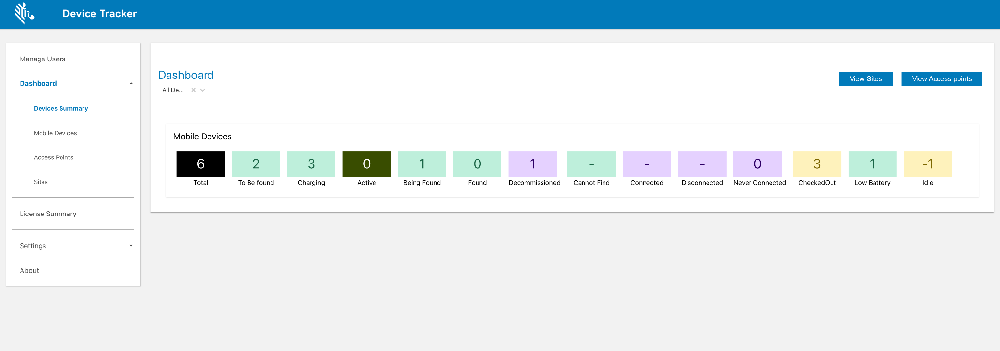 Devices Summary - Administrator View
Each tile represents a device state or status:
- Total – Total number of devices being tracked across all sites.
- To Be Found – Number of devices marked "to be found" to initiate the device.
- Charging – Number of devices that are powered on and in the charging state.
- Active - Number of devices that are in active use, i.e. the device is not in the suspend or powered off state.
- Being Found – Number of devices that are being searched. This is triggered when a user initiates a device search.
- Found – Number of devices that are successfully found after a device search. This is triggered when a user indicates the device is found.
- Decommissioned – Number of devices that are designated as decommissioned. These devices are not in the active device pool, the collection of devices with active server communication.
- Cannot Find – Number of devices that could not be found after a search was conducted.
- Connected - Number of devices that are actively connected to the server.
- Disconnected – Number of devices that previously connected to the server but are no longer connected due to lack of communication with the server for approximately 12 minutes.
- Never Connected – Number of devices that are registered but never connected to the server.
- Checked Out - Number of devices that have been checked out by a user.
- Low Battery – Number of devices that have reached the low power threshold, requiring attention for it to be charged prior to battery depletion.
- Idle - Number of devices that are not charging and are in the idle state i.e. have not been moved for the duration of the Device Idle threshold.
Click on a tile to filter by the specific device state or status, displaying a list of corresponding devices.
Top right navigation buttons:
- View Sites - navigates to the Sites section, the same section that is accessible from the left menu: Dashboard > Sites.
- View Access Points - navigates to the Access Points section, the same section that is accessible from the left menu: Dashboard > Access Points.
To display the Devices Summary for a specific site, click on the All Sites drop-down and selct the desired site. Unassigned devices filters the devices that are not assigned to any site. Alternatively, the site name to search for can be entered in the search field: 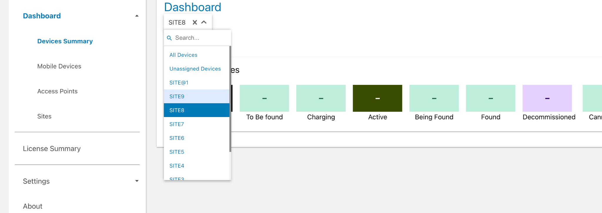 Devices Summary - Select Site
Mobile Devices
Mobile Devices displays the Devices Summary followed by a table of devices that provides access to device information details. Based on the site drop-down selection, the device list includes devices across all sites (if All Sites is selected) or devices to a specific site (if the specific site name is selected). 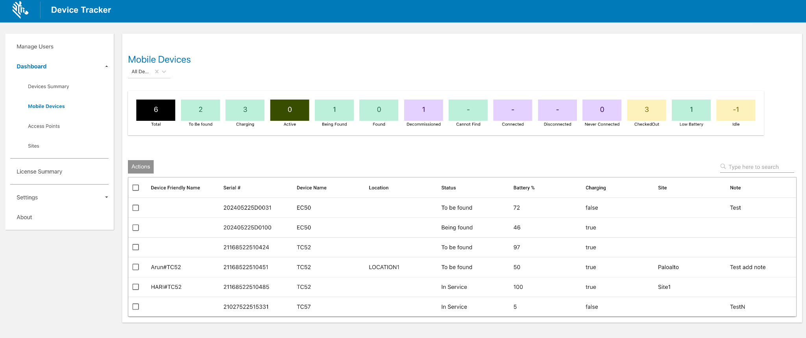 Devices Summary - Select Site
The table located below the Devices Summary strip shows the list of devices corresponding to the drop-down selection (All Devices, Unassigned Devices, or site name) with the following information:
- Device Friendly Name - the assigned friendly name to the mobile device.
- Serial Number - the serial number of the mobile device.
- Device Name - the assigned name, or model number, of the mobile device.
- Checked Out At - the time which the mobile device was last checked out.
- Location - the mobile device location based on the access point it is connected to.
- Status - the status of the mobile device: In Service, To Be Found, Finding, Found, Cannot Find, Decommissioned, Unlicensed
- Battery level - the current battery level of the mobile device.
- Charging - the charging state of the mobile device: true (charging), false (not charging).
- Site - the assigned site of the mobile device.
- Note - comments or notes entered by an administrator or manager capturing information specific to the device.
To filter by site, click on the All Sites drop-down and select the desired site or enter a site name in the search field. 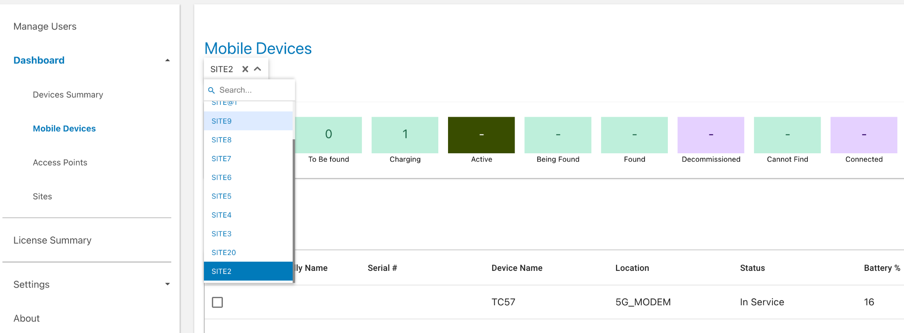 Mobile Devices - Select Site
Above the mobile device table, the Actions menu provides the following options based on the selected device(s):
- Mark Device for Finding - This changes the device(s) status to To Be Found, placing the device in the To Be Found list used in the device search process.
- Clear Device for Finding - The device status is changed from To Be Found back to In Service.
- Check in Device - Checks in the checked out device(s).
- Add Notes - A dialog box appears prompting to enter notes or comments for the selected device(s).
- Recommission Device - Changes the device(s) status from the Decommissioned state (i.e. removed from the active device license pool) and recommissions the device back to the In Service state.
- Decommission Device - Removes the device(s) from the active device pool and places it out-of-service in the Decommissioned status.
To perform a device search, click on the search bar located in the top right of the device table and enter the text to search based on Device Model, Serial Number, Device Friendly Name, Checked Out Username and Access Point. 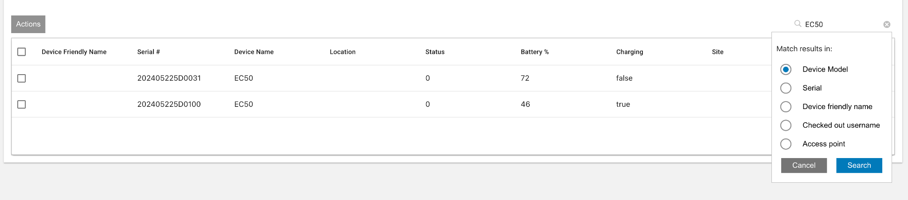 Mobile Devices - Search
Select a single device from the devices table to display the Device Details providing the following information:
- Serial - the serial number of the device
- Device Model - the model of the device
- Location - device location
- Status - one of the following:
- In Service - the device is part of the active device pool and not in any of the other device states
- To Be Found - the administrator or manager tags the device To Be Found, waiting for a user to take action to find the device
- Finding - the device search is initiated by a user
- Found - the device is located after conducting the search
- Cannot Find - the device could not be found after the search was conducted
- Decommissioned - the device is removed from the active device pool
- Unlicensed - the device is not allocated with a license, therefore the app will not operate.
- Battery Level - the battery level of the device (%)
- Charging - the charging state of the mobile device:
- True - the device is charging
- False - the device is not charging
- Note - comments or notes entered by an administrator or manager capturing information specific to the device.
- License State - indicates whether or not the device is allocated with a license:
- Licensed - device is allocated with a license
- Unlicensed - the device is not allocated with a license, therefore the app will not operate.
- Last Reported - the time stamp in which the device last reported to the server
- Connection State - the device state based on connection to the server:
- Never connected – the device has never connected to the server
- Connected – the device is connected to the server
- Disconnected – the device previously connected to the server and is now disconnected due to no communication with the server for approximately 12 minutes.
- Secondary BLE - identifies the state of the secondary BLE (Bluetooth Low Energy) beacon:
- Enabled - the device has secondary BLE beacon capability and beaconing is enabled. When the device loses power, the secondary BLE continues to transmit beacons to aid in locating the device.
- Disabled - the device has secondary BLE beacon capability and beaconing is disabled
- Not Available - the device does not have secondary BLE beacon capability
- Display ON - Displays true or false if the device is on (may be active) or off (inactive), respectively.
- Checked Out By - The current user that has checked out the device.
 Mobile Devices - Device Details
Mobile Devices - Device Details
Click on Actions button to perform one of the following actions:
- Mark Device for Finding - This changes the device(s) status to To Be Found, placing the device in the To Be Found list used in the device search process.
- Clear Device for Finding - The device status is changed from To Be Found back to In Service.
- Check in Device - Checks in the checked out device(s).
- Add Notes - A dialog box appears prompting to enter notes or comments for the selected device(s).
- Recommission Device - Changes the device(s) status from the Decommissioned state (i.e. removed from the active device license pool) and recommissions the device back to the In Service state.
- Decommission Device - Removes the device(s) from the active device pool and places it out-of-service with the Decommissioned status.
- Start Finding - begins the device search process. Refer to Find a Device. This is visible only if the device is marked To Be Found. During the device search, click one of the following when appropriate:
- Stop Finding - stop the device search process; changes the state of the device from Being Found back to To Be Found so another device can initiate the finding process.
- Play Sound - emits a sound from the device being located; listen and follow the sound to locate the device.
- Found - indicates the device is successfully located after conducting the device search.
- Cannot Find - indicates the device could not be found after the search was conducted
Access Points
Access Points displays the access point information across All Sites or for a specific site:
- Site Name - the assigned site registered to the access point.
- MAC Address - the associated MAC address of the Access Point.
- Location - the location friendly name registered to the access point.
- Asset - the asset name (optional) registered to the Access Point.
All data is based on the information registered to the Access Point. By default, information is listed across all sites. To display AP information related to a specific site, from the All Sites drop-down menu, select the desired site: 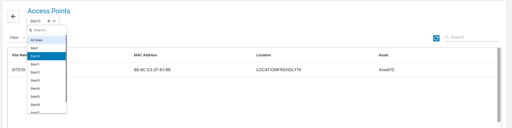 Access Points - Select specific site
By clicking on the Filter drop-down menu, the list of APs from All Sites or a specific site can be further filtered based on:
- Sites not assigned - lists APs not registered to any site.
- Location friendly names not assigned - lists APs with no friendly names registered. 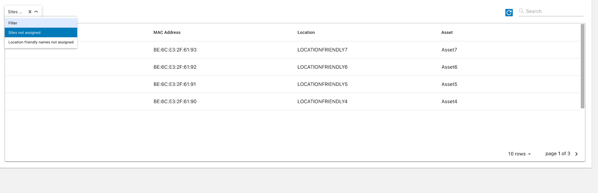 Access Points - Filter
To conduct a search for APs, click the search field located at the top right and perform a search based on:
- MAC Address
- Friendly Name
Sites
Sites lists all the sites in the organization. A search can be conducted using the search field located at the top right. 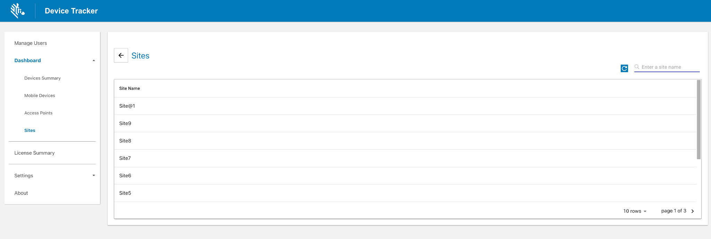 Sites
Manager Web Portal
The manager dashboard displays device and access point (AP) information specific to the manager's assigned site and allows action to be taken on devices to aid in device tracking. After logging in to the web portal as a manager, click Dashboard in the left menu. The following views are displayed: Mobile Devices, Access Points.
Mobile Devices
Mobile Devices displays the Devices Summary followed by a table of devices that provides access to device information details. Based on the site drop-down selection, all the devices are listed for the site (if All Devices is selected) or unassigned devices are listed (if Unassigned Devices is selected). The Unassigned Devices selection displays devices that have not been assigned to any site. This provides the opportunity to assign a device to this site.
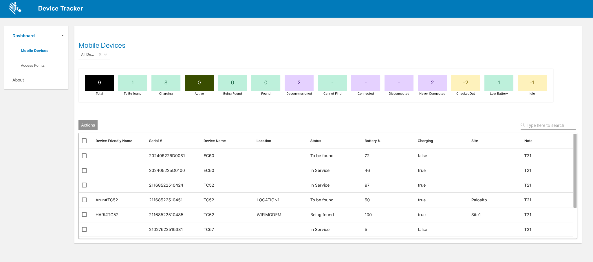 Devices Summary - Select Site
The table located below the Devices Summary strip shows the list of devices corresponding to the drop-down selection (All Devices, Unassigned Devices) with the following information:
- Device Friendly Name - the assigned friendly name to the mobile device.
- Serial Number - the serial number of the mobile device.
- Device Name - the assigned name, or model number, of the mobile device.
- Checked Out At - the time which the mobile device was last checked out.
- Location - the device location based on the access point it is connected to.
- Status - the status of the mobile device: In Service, To Be Found, Finding, Found, Cannot Find, Decommissioned, Unlicensed
- Battery level - the current battery level of the mobile device.
- Charging - the charging state of the mobile device: true (charging), false (not charging).
- Site - The assigned site of the mobile device.
Above the mobile device table, the Actions menu provides the following options based on the selected device(s):
- Mark Device for Finding - This changes the device(s) status to To Be Found, placing the device in the To Be Found list used in the device search process.
- Clear Device for Finding - The device status is changed from To Be Found back to In Service.
- Check in Device - Checks in the checked out device(s).
- Add Notes - A dialog box appears prompting to enter notes or comments for the selected device(s).
- Recommission Device - Changes the device(s) status from the Decommissioned state (i.e. removed from the active device license pool) and recommissions the device back to the In Service state.
- Decommission Device - Removes the device(s) from the active device pool and places it out-of-service in the Decommissioned status.
To perform a device search, click on the search bar located in the top right of the device table and enter the text to search based on Device Model, Serial Number, Device Friendly Name, Checked Out Username and Access Point. Mobile Devices - Search
Select a single device from the devices table to display the Device Details providing the following information:
- Serial - the serial number of the device
- Device Model - the model of the device
- Location - the device location based on the access point it is connected to
- Status - one of the following:
- In Service - the device is part of the active device pool and not in any of the other device states
- To Be Found - the administrator or manager tags the device To Be Found, waiting for a user to take action to find the device
- Finding - the device search is initiated by a user
- Found - the device is located after conducting the search
- Cannot Find - the device could not be found after the search was conducted
- Decommissioned - the device is removed from the active device pool
- Unlicensed - the device is not allocated with a license, therefore the app will not operate.
- Battery Level - the battery level of the device (%)
- Charging - the charging state of the mobile device:
- True - the device is charging
- False - the device is not charging
- Note - comments or notes entered by an administrator or manager capturing information specific to the device.
- License State - indicates whether or not the device is allocated with a license:
- Licensed - device is allocated with a license
- Unlicensed - the device is not allocated with a license, therefore the app will not operate.
- Last Reported - the time stamp in which the device last reported to the server
- Connection State - the device state based on connection to the server:
- Never connected – the device has never connected to the server
- Connected – the device is connected to the server
- Disconnected – the device previously connected to the server and is now disconnected due to no communication with the server for approximately 12 minutes.
- Secondary BLE - identifies the state of the secondary BLE (Bluetooth Low Energy) beacon:
- Enabled - the device has secondary BLE beacon capability and beaconing is enabled. When the device loses power, the secondary BLE continues to transmit beacons to aid in locating the device.
- Disabled - the device has secondary BLE beacon capability and beaconing is disabled
- Not Available - the device does not have secondary BLE beacon capability
- Display ON - Displays true or false if the device is on (may be active) or off (inactive), respectively.
- Checked Out By - The current user that has checked out the device.
Mobile Devices - Device Details
Click on the Actions button to perform one of the following actions:
- Mark Device for Finding - This changes the device(s) status to To Be Found, placing the device in the To Be Found list used in the device search process.
- Clear Device for Finding - The device status is changed from To Be Found back to In Service.
- Check in Device - Checks in the checked out device(s).
- Add Notes - A dialog box appears prompting to enter notes or comments for the selected device(s).
- Recommission Device - Changes the device(s) status from the Decommissioned state (i.e. removed from the active device license pool) and recommissions the device back to the In Service state.
- Decommission Device - Removes the device(s) from the active device pool and places it out-of-service with the Decommissioned status.
- Start Finding - begins the device search process. Refer to Find a Device. This is visible only if the device is marked To Be Found. During the device search, click one of the following when appropriate:
- Stop Finding - stop the device search process; changes the state of the device from Being Found back to To Be Found so another device can initiate the finding process.
- Play Sound - emits a sound from the device being located; listen and follow the sound to locate the device.
- Found - indicates the device is successfully located after conducting the device search.
- Cannot Find - indicates the device could not be found after the search was conducted
Access Points
Access Points displays the access point information for APs within the site:
- Site Name - the assigned site registered to the access point.
- MAC Address - the associated MAC address of the Access Point.
- Location - the location friendly name registered to the access point.
- Asset - the asset name (optional) registered to the Access Point.
All data is based on the information registered to the access points. 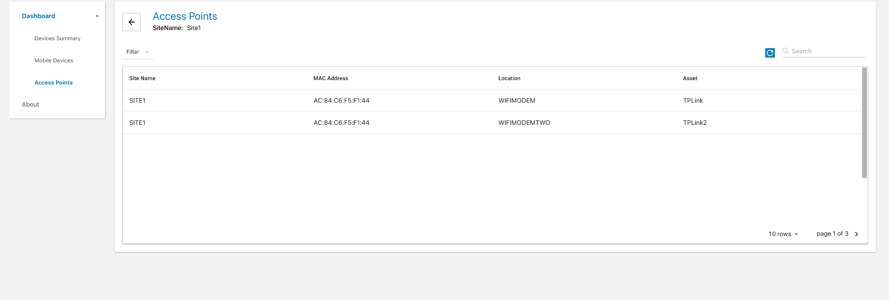 Access Points - Site
By clicking on the Filter drop-down menu, the list of APs from All Sites or a specific site can be further filtered based on:
- Sites not assigned - lists APs not registered to any site.
- Location friendly names not assigned - lists APs with no friendly names registered. Access Points - Filter
To conduct a search for APs, click the search field located at the top right and perform a search based on:
- MAC Address
- Friendly Name
Monitor Devices
Administrator/Manager Login
Administrators and managers are required to login to view and perform actions based on their respective role. Device Tracker supports a single session for each user login and does not support multiple login sessions. If an admin/manager logs in to multiple browser sessions or devices using the same user login, the login sessions are automatically terminated after a period of time.
To login as administrator or manager:
- Launch the Device Tracker app.
- If the Checkout feature is enabled, scan a barcode to checkout the device.
- Tap the options menu at the top right and select Admin/Manager Login.
- Enter the administrator/manager login credentials or scan the barcodes for the username and password.
- Perform the required tasks.
- Logout when complete. Tap the options menu at the top right and select Admin/Manager Logout.
After logging in as administrator on the device, tap on the top right option menu and select one of the following:
- Admin/Manager Logout – logs out the administrator or manager.
- Settings – displays information and options:
- Import Access Points/Sites/Devices - import access point, site and device data to aid in locating devices. See Site, Access Point, and Device Data.
- Device Friendly Name – displays the friendly name assigned to the device.
- Site Name – displays the friendly name assigned to the site location.
Device Information
Administrators and managers have additional capability to view data:
Site List – administrator access only; lists the sites in the organization
Dashboard – administrator and manager access; lists a summary showing metrics based on device tracker and device status
Device List – administrator and manager access; lists devices with capability to view device details
Administrator or manager login is required to access the data.
Site List
After administrator login, a site listing is visible for site selection:
- All Devices – when selected, displays the dashboard of all devices (whether assigned or not assigned to a site) across all sites
- Unassigned Devices – when selected, displays the dashboard of devices that are not assigned to a site.
- Sites - lists all the sites across the entire organization. Select an individual site to display the dashboard for the particular site.
 Site list
Site list
Dashboard
The dashboard is accessible to administrators and managers, displaying device categories based on device status, along with statistics for each category. For administrators, the dashboard can be displayed for any site selected in the site list, including All Devices (across all sites) or Unassigned Devices. For managers, the dashboard displays information based on the site their device is assigned to. If the manager device is not assigned to a particular site, the dashboard displays information based on all unassigned devices.
Dashboard categories:
- Total Devices – displays the total number of devices being tracked within the particular site. If All Devices is selected instead of a particular site, the total number of devices reflects the devices across all sites. If Unassigned Devices is selected, the total number of devices reflects the devices that are not assigned to any site.
Device status:
- To Be Found – filters devices designated To Be Found where action has not been taken to initiate the search for these devices.
- Being Found – filters devices that are actively being searched. Triggered when a user initiates a device search.
- Found – filters devices that were successfully found after a search. Triggered when a user indicates the device is found.
- Cannot Find – filters devices that could not be found after a search was conducted.
- Decommissioned – filters devices that are designated as decommissioned. These devices are not in the active device pool, the collection of devices with active server communication.
- Unlicensed - the device is not allocated with a license, therefore the app will not operate.
Device battery states:
- Low Battery – filters devices that have reached the low power threshold of 15% remaining battery or lower, requiring attention to be charged prior to battery depletion.
- Charging – filters devices that are powered on and in the charging state.
- Discharging – filters devices that are powered on and discharging.
Device connection states:
- Never Connected – filters devices that are registered but never connected to the server.
- Disconnected – filters devices that have connected to the server but are no longer connected due to no communication with the server for approximately 12 minutes.
If Device Checkout is enabled:
- Checked Out – filters devices that are checked-out by users after scanning their user barcode, associating the user to the device.
 Dashboard
Dashboard
Note: In split-screen mode, when the dashboard is displayed in Device Tracker and the app is not in focus, the app displays a blank screen. When Device Tracker is back in focus, the dashboard is displayed as expected.
Device List
The device list displays all devices corresponding to the selected category in the dashboard. In the dashboard screen, select a category in the list to view the corresponding list of devices. The search result is limited to display 100 records. If this limit is exceeded, a message is displayed below the device list indicating that there are additional records and the search should be refined to avoid exceeding the limit.
Each individual device is displayed as a “device card” that shows information pertaining to that particular device:
Device friendly name (if not available, the device model and serial number is displayed)
Device model and serial number
AP friendly name (if available) or BSSID - Never Connected is displayed if device has never connected to the server. The icon indicates the connectivity state to the access point. A Wi-Fi icon with a slash indicates the device is not connected to the AP.
Device status:
- In Service – device is part of the active device pool and not in any of the other device states
- To Be Found – the administrator or manager tagged the device, waiting for a user to take action to find the device
- Finding – the device search is initiated by another user
- Found – the device is located after conducting the search
- Cannot Find – the device could not be found after the search was conducted
- Decommissioned – device is removed from the active device pool
- Unlicensed - the device is not allocated with a license, therefore the app will not operate.
Top right icon indicates device battery level or charging state.
 Device list from All Devices
Device list from All Devices
Tap and hold on any device card to display the available device actions:
- View Details – displays the Device Details screen, see below.
- Add a Note – enter text to capture comments specific to the device that could be helpful in tracking. For example, when a device is decommissioned a note can be added as follows: “Battery does not charge, needs to be replaced”.
- Start Finding – begins the device search process. Refer to Find a Device. This is visible only if the device is marked To Be Found.
- Recommission – places a device from the decommissioned state back to the In Service state as part of the active device pool.
- Decommission – removes the device from the active device pool and places it out-of-service. This can be used when a device is undergoing repair or is deprecated and no longer in use.
 Device action menu
Device action menu
Device Details
Tap on any device card to display the Device Details screen:
Device Status:
- In Service – device is part of the active device pool and not in any of the other device states
- To Be Found – the administrator or manager tagged the device, waiting for a user to take action to find the device
- Finding – the device search is initiated by another user
- Found – the device is located after conducting the search
- Cannot Find – the device could not be found after the search was conducted
- Decommissioned – the device is removed from the active device pool
- Unlicensed - the device is not allocated with a license, therefore the app will not operate.
Friendly name – the assigned friendly device name as registered by the administrator
Device Model – the model of the device
Serial Number – the serial number of the device
License State:
- Licensed - device is allocated with a license
- Unlicensed - the device is not allocated with a license, therefore the app will not operate.
Site Name – displays the assigned friendly name for the site as registered by the administrator. If no value assigned, it is blank.
Last Connected AP – displays the access point the device was last connected to, which aids in identifying the device location
Last Reported – displays the time stamp of the last time the device reported to the server
Connection State:
- Never connected – the device has never connected to the server
- Connected – the device is connected to the server
- Disconnected – the device previously connected to the server and is now disconnected due to no communication with the server for approximately 12 minutes.
Secondary BLE: identifies the state of the secondary BLE (Bluetooth Low Energy) beacon:
- Enabled - the device has secondary BLE beacon capability and beaconing is enabled. When the device loses power, the secondary BLE continues to transmit beacons to aid in locating the device.
- Disabled - the device has secondary BLE beacon capability and beaconing is disabled
- Not Available - the device does not have secondary BLE beacon capability
Battery Level – displays the battery level (high, medium, or low) along with the percent (%) of battery remaining:
- High – indicates the remaining battery is greater than 66%
- Medium – indicates the remaining battery is within the range 15% to 66%
- Low – indicates the remaining battery is less than or equal to 15%
Battery Status:
- Charging – the device is charging while plugged to a power source
- Not Charging – device is not plugged to a power source
Display On – displays “true” or “false”. If true, it indicates the device display is on and the device may be in active use. If false, it indicates the device display is off, indicating the device is not in active use.
Note – text entered by an administrator or manager capturing information specific to the device.

|
Device details information
Device/Site Search
Two types of searches can be performed:
- Search by site
- Search by device
Search By Site
A site search performs a partial search for the characters entered in the search field. The search results display matches that include the characters being searched for within the site name.
To perform a site search:
From the main site list, tap the search icon at the top.
 Site list with search
Site list with searchEnter the text to search in the field then tap the search icon in the virtual keyboard to start the search.
 Site search field
Site search fieldThe search results are listed in the Sites section. The results include site names that contain the text entered. The search is not case sensitive.
Search by Device
A device search returns a list of devices that match the keyword entered based on the criteria selected: device friendly name, device model, serial number, or AP friendly name. The search result is limited to display 100 records. If this limit is exceeded, a message is displayed below the device list indicating that there are additional records and the search should be refined to avoid exceeding the limit.
To perform a device search:
Tap the search icon located in the lower right of the device list.
Select the type of search to be conducted, whether based on the device friendly name, device model, serial number, AP friendly name or checkout (if checkout is enabled). Enter the text to conduct a search. The search is case-sensitive.
 Device search
Device searchTap Search.
The search results return matches that begin with the text entered in the search field corresponding with the type of search conducted.
Mark Device To Find
When initiating the process to find a device, the misplaced device must first be set to the To Be Found state by the administrator or manager. The finding device, or the device performing the search, is used to determine the distance the user is located in relation to the “misplaced” device, or the device to be found. Location must be enabled on the finding device to perform the device search.
A device must be marked To Be Found before a device search can take place.
To mark a device "To Be Found":
- From the device list, tap and hold the device card of the misplaced device to find. Select Set To Find.
Device action menu
- The status is changed to To Be Found and the device is now listed in the To Be Found category in the dashboard.
- To proceed to find the device, continue to the next section Find a Device.
Managers and administrators can alternatively mark a device To Be Found as follows:
- Open the device list.
- Tap on a device card.
- Tap Enable Finding.
Manager/admin view to mark a device "To Be Found"
Find Device
A device search is initiated from the To Be Found device list. For an associate, the To Be Found device list is displayed after starting the client app. For an administrator or manager, the To Be Found device list is accessible via the dashboard.
When the user is ready to take action to perform the device search, the first step is to use the finding device to find the access point (AP) that the misplaced device is connected to. This provides the general location of the misplaced device. The user walks toward the AP, then uses the Bluetooth proximity indicator on the finding device to identify how close or far the misplaced device is located in relation to the finding device. To further pinpoint the device location, a sound can be played by tapping the Play Sound button on the finding device to locate the misplaced device by audio sound. Play Sound is also useful if the proximity indicator is not operational (e.g. Bluetooth is disabled).
Device Tracker can locate devices even when the device loses battery power or is turned off, if the device has a secondary BLE.
Audio alerts can be played during the search process even if the lost device is in Do Not Disturb (DND) mode, with exceptions.
To start the search process:
Perform one of the following in the To Be Found device list:
Tap and hold the device card for the misplaced device. Select Start Finding from the device action menu.
 Device action menu
Device action menu
Or,
Tap on the device card for the misplaced device to open the Device Details screen. Tap Start Finding.

|

|
"Start Finding" Associate view "Start Finding" Manager/Admin view
- The device tracking screen appears. The device state is changed to Being Found.
- Check the Connected AP on the tracking screen on the misplaced device. Walk towards the known location of the AP.
- Using the BLE proximity meter, walk towards the misplaced device. The BLE proximity meter identifies the overall trend on how far or how close the user is located in relation to the misplaced device. The closer the misplaced, the further the blue indicator bar expands to the right. As the finding device approaches the misplaced device, the numerical value on the meter decreases as it reaches “Close” or “0” value. 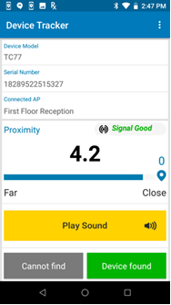Tracking screen with proximity meter
- Tap Play Sound on the finding device. The misplaced device emits a chirping sound to help identify its location. Walk towards the sound. Continue this step until the device is found.
- If the misplaced device is found, tap Device found. The device is then moved to the Found state. If the device is not found, tap Cannot find. The device is then moved to the Cannot Find state. The device is listed under the corresponding categories accessible from the dashboard.
When a device is found, recommission the device to place it back into the active device pool. Alternatively, decommission the device if it needs to be removed from the active device pool.
A note can be added at any time to capture comments specific to the device to aid in tracking or identifying problems with the device. This feature is available only for administrators and managers.
Behavior when locating a misplaced device in different scenarios:
- If Bluetooth is turned off on a misplaced device that is powered-on and a user initiates locating that device, Device Tracker automatically turns on Bluetooth in the misplaced device to allow that device to be located using the proximity indicator. However, if the misplaced device is disconnected from the server, Bluetooth will not be turned on.
- If Bluetooth is turned off on the misplaced device while it is being found, that device cannot be located using the proximity indicator. However, if the device is powered off, it can still be located using secondary BLE (if supported).
- A device is in the Disconnected state when it does not communicate with the server for approximately 12 minutes. During this time, if a device search is performed on a misplaced device that has lost connection with the server, that device cannot be located using the proximity indicator and any attempt to Play Sound is ineffective since audio cannot be emitted from the disconnected device.
- If a finding device initiates a device search prior to the misplaced device becoming Disconnected, the misplaced device can be found using the proximity indicator.
- If Bluetooth is turned off on the finding device while it is locating the misplaced device, the misplaced device cannot be located using the proximity indicator on that finding device.
- If Android Location Services is turned off on the finding device, it cannot locate the misplaced device using the proximity indicator.
Secondary BLE
For devices with secondary BLE beaconing capability, Device Tracker can locate the device if it loses battery power or is powered off. The location of the device is detected by signals transmitted from the secondary BLE beacon. Attempts to locate the device must occur soon after the device loses power, prior to loss of power from the secondary BLE beacon. The secondary BLE radio of some devices is located in the battery. Such devices are subject to the behavior described in battery-based BLE behavior.
When locating a device based on its secondary BLE beacon, the Play Sound feature is disabled during device search since it cannot function due to the loss of device power. The Secondary BLE state is viewed from the Device Details screen.
Usage Notes:
- Secondary BLE differs from the built-in device primary BLE used for device tracking, which cannot operate once the device loses power.
- While finding a device, the values seen in the BLE proximity indicator may differ when finding a device that is powered on (primary BLE) versus a device that is powered off (secondary BLE), particularly if the Reference RSSI is not specified for the battery-based secondary BLE. This is due to varying location and orientation of the secondary BLE antenna. During the finding process, the user should rely on the trend reflected in the BLE proximity meter to navigate to the misplaced device.
Do Not Disturb (DND) Mode
DND mode is an Android feature that silences the device - it mutes sound and stops vibration. Device Tracker has the capability to play audio alerts when DND mode is turned on in the lost device, with exceptions (see below).
Turn on DND mode by performing one of the following methods:
- Press the hardware volume +/- key (on the side of the device) then tap the Silent icon in the Zebra Volume Control UI to turn on silent mode.
- In Android Settings > Sound > Zebra Volume Control, tap the Silent icon in the Zebra Volume Control UI to turn on silent mode.
- In Android Quick Settings, tap the Do Not Disturb icon to turn on DND.
- In Android Quick Settings, tap the drop-down for the Do Not Disturb icon to select Alarms only.
- In Android Quick Settings, tap the drop-down for the Do Not Disturb icon to select Priority only.
- In Android Quick Settings, tap the drop-down for the Do Not Disturb icon to select Total silence.
- In Android Settings > Sound > Default notification sound, select Silent to set the default notification sound to silent. (This silences the device without DND mode.)
When DND is turned on based on the methods above, Device Tracker can play audio alerts in all cases except for the last two bullet points. In the last two cases, Device Tracker can no longer play a sound during the finding process in the following scenarios:
- When a user gains access to Android Quick Settings to completely silence the device (see the second to last bullet point above).
- When a user gains access to the Android Settings app and modifies the notification sound to silent mode (see the last bullet point above).
To ensure full operation of Device Tracker, Zebra recommends to restrict user access and prevent users from completely silencing a device by setting both of the following options:
- Disable access to Android Quick Settings > DND UI by using an EMM or Zebra MX UI Manager to enable/disable the DND feature.
- Disable access to Android Settings by using an EMM or Zebra Enterprise Home Screen.
Disable Finding
After a device is marked To Be Found, if the device search needs to be terminated follow these steps (applies to only managers and administrators):
- Open the device list.
- Tap on a device card.
- Tap Disable Finding.
Manager/admin view to disable finding
The device is removed from the To Be Found list and placed back In Service.
Decommission/Recommission Device
After a device is found, recommission the device to place it back into the active device pool. This changes the device status from Found to In Service. Or, recommission or decommission a device on-demand to add or remove the device to/from the active device pool. This feature is available only to administrators or managers.
Decommission a Device
When a device is no longer in use or needs to be taken out of the active device pool, it can be set as Decommissioned. This prevents any further device reporting to the server and applies to situations when the device is being sent for repair, the device is being replaced, or the device is deprecated and needs to be removed.
When a device is decommissioned, the license is automatically deallocated from the device and returned to the license pool so it can be reallocated to another device.
To decommission a device (admin/manager access required):
- Perform one of the following procedures:
From the device list, tap and hold on the device card. Tap Decommission from the device action menu displayed. The Device Details screen appears.
Or,
If already in the Device Details screen, tap on the top right menu and select Decommission. - The status is changed to Decommissioned and the user is prompted to enter a note.
- If desired, add a note by entering text in the Note section to indicate the reason for the device decommission. See Add/Edit a Note section.
- Tap back. The note is saved and the device is placed in the Decommissioned category in the dashboard.
Recommission a Device
Recommission a device after it is found, or it is previously Decommissioned and needs to be placed back into the active device pool (e.g. returned from repair). Recommissioning a device restarts the device status reporting to the server.
When recommissioning a device, if a license is available it is automatically allocated to the device. If no license is available, the device remains in the decommissioned state and a note is automatically added indicating there is no license available. This note overwrites any pre-existing note. When a license is available, the admin or manager must recommission the device to allocate the license and manually delete the note.
Steps to recommission a device (admin/manager access required):
- In the dashboard, scroll down and tap Decommissioned or Found to display the corresponding list of devices.
- Perform one of the following procedures:
Tap and hold the device card and select Recommission.
Or,
Tap the device card to display the Device Details screen. Tap on the top right menu and select Recommission. - The Status is changed to In Service, as seen in the Device Details screen.
- Tap the Note section to enter or edit text indicating the reason why the device is recommissioned.
Add/Edit Note
Administrators and managers can add a note to capture comments specific to the device to help in device tracking or identifying device problems. For example, a comment could be "device screen damaged".
To add or edit a note:
From the device list of any category accessed from the dashboard, tap and hold the device card and tap Add a Note. If a note already exists, the option is provided to Edit a Note.
The Note section appears in the Device Details screen prompting to enter in text. 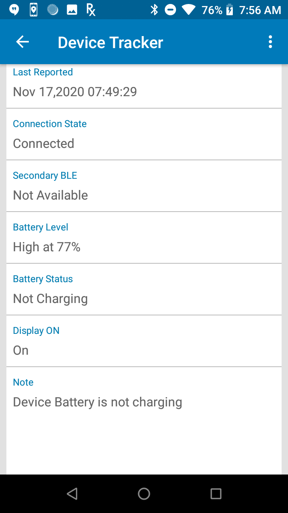Enter a note or comment
After entering text for the note, tap the back button.
The note is saved and can be viewed in the Device Details screen.
Licenses
Licenses are required for Device Tracker operation on devices. Licenses are shared from a single pool of licenses, regardless of expiration date. When a device registers to the Device Tracker server, if a license available, it is allocated to the device from the license pool.
After a license expires or when a device is recommissioned, it is automatically allocated a license if available. Administrators can perform the following:
- Monitor licenses.
- Transfer a license from one device to another.
- Remove a license.
See the License section for more information.
To view license information:
- From the web portal, tap License Summary in the left menu.
- The following information is provided based on unexpired licenses:
- Total licenses - quantity of licenses that have been purchased
- Total licenses available - quantity of licenses that are available and can be allocated to devices
- Total licenses consumed - quantity of licenses allocated to devices
- List of licenses purchased with corresponding quantity and expiration date. This data is static and removed from the list after the expiration date is surpassed.
- Sync Licenses button to refresh license data on-demand and synchronize with the Zebra Enterprise Software Licensing system. The license information is updated once each day.
- Time stamp of the last occurrence when the license information was synchronized with the license server.
- Total licenses - quantity of licenses that have been purchased

License Summary in Device Tracker web portal